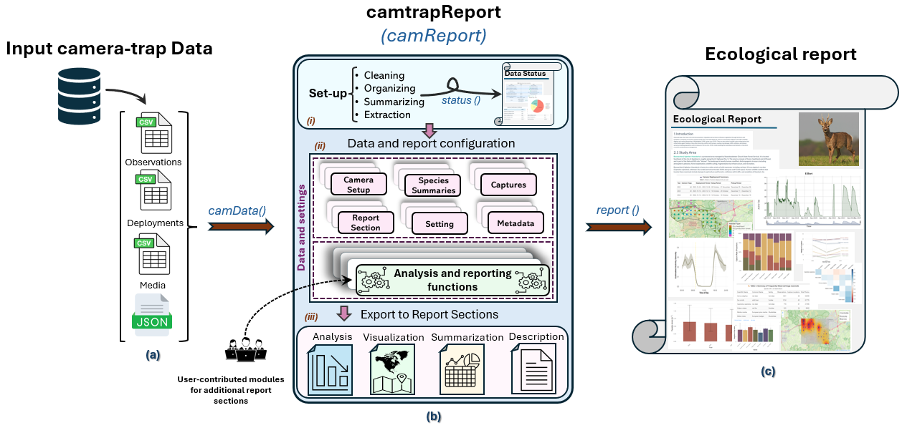

camtrapReport
Reproducible reporting for camera-trap monitoring data


camtrapReport turns camera-trap data in Camtrap DP format into reproducible data-quality assessments and ecological reports. It combines data checks, ecological analyses, visualisations, and explanatory text in a configurable workflow, helping researchers report consistently across sites and surveys. The package produces two complementary outputs:
- Data Status Check: checks data completeness, consistency, annotations, and spatial and temporal coverage.
- Ecological Report: brings together selected analyses, figures, maps, tables, and explanatory text in a configurable report.
Reports are generated as HTML by default. PDF export is available for ecological reports where supported by the selected modules and local setup. You can work directly in R or use the optional graphical interface.

Available analyses
camtrapReport provides modules for describing sampling, summarising species observations, and exploring ecological patterns. The table lists available modules; the analyses included in a particular report depend on its selected profile, data, and requirements.
| Analysis | Available modules | Main inputs or considerations |
|---|---|---|
| Study and sampling |
introduction, methods, study_area, sampling, location, effort, image_processing, data_processing
|
Metadata, deployments, and optional study-area boundary |
| Captures and trends |
results, captures, abundance_trends
|
Observations and sampling effort; capture rates are not density estimates |
| Population density (REM) |
population_density, model_parameters, population_densities
|
Species-specific REM inputs and assumptions |
| Activity and community patterns |
activity_patterns, richness, co_occurrence, species_accumulation
|
Species records, timestamps, and sufficient observations |
| Spatial and habitat analyses |
spatial_density, habitat_preferences
|
Camera locations and, where relevant, habitat data |
| Supporting sections |
acknowledgements, appendix, References
|
Supplementary information and citations |
Data-status modules assess spatial and temporal information, availability, validation, annotations, and observation types. Some ecological analyses need additional data or optional R packages. See the Ecological Report guide for interpretation and requirements.
Installation
camtrapReport requires R 4.1.0 or later. Install the development version from GitHub:
if (!requireNamespace("pak", quietly = TRUE)) {
install.packages("pak")
}
pak::pkg_install("spatialecology/camtrapReport")Some analytical modules require optional R packages. If a selected module reports a missing dependency, install the required package. Alternatively, camtrapReport::install_all() checks dependencies for bundled and registered modules, but may install many packages. The core workflow does not require launching the graphical interface.
Prepare your data
Start with a Camtrap DP dataset containing its metadata and related deployment, media, and observation tables. If your data are in another format, prepare and validate a Camtrap DP dataset first; the camtrapdp package provides tools and examples for this step.
camData() accepts an extracted Camtrap DP directory or ZIP archive. Habitat information and a study-area boundary are optional. If a study-area boundary changes between surveys, account for that when interpreting spatial results. See the Data Status Check guide and ?camData for input details.
camData() can save processed files alongside the source dataset. The example below works on a temporary copy so the bundled data remain unchanged. If you correct the source CSV or JSON files, reload with update = TRUE before rerunning reports to refresh the processed object.
Quick start
This example uses a compact Camtrap DP dataset derived from GMU8_LEUVEN, with bundled habitat information and a study-area boundary.
library(camtrapReport)
example_root <- tempfile("camtrapReport-example-")
dir.create(
example_root,
recursive = TRUE
)
copied <- file.copy(
from = system.file(
"external",
"dataset",
package = "camtrapReport",
mustWork = TRUE
),
to = example_root,
recursive = TRUE,
copy.mode = FALSE
)
habitat <- utils::read.csv(
system.file(
"external",
"habitat",
"habitat.csv",
package = "camtrapReport",
mustWork = TRUE
)
)
study_area <- system.file(
"external",
"study_area",
"study_area.shp",
package = "camtrapReport",
mustWork = TRUE
)
cm <- camData(
data = file.path(example_root, "dataset"),
habitat = habitat,
study_area = study_area,
update = TRUE
)
cm
#> Camera trap Object for the site : GMU8 LEUVEN
#> =====================================================
#> Total number of sequences : 10182
#> Total number of observations : 10798
#> Total number of animals : 4693
#> Total number of detected species: 41
#> Date/time (years) with data : 2018, 2019, 2020, 2021, 2022, and 2023
#> -----------------------------------------------------1. Check your data
Run status() to review completeness, consistency, and spatial and temporal coverage before interpreting ecological results.
status_file <- status(cm, view = FALSE)View an example Data Status Check. Review the findings, correct relevant issues in your source data, reload with camData(..., update = TRUE), and rerun status() as needed. Not every warning necessarily means that a dataset is unusable; assess its relevance to the intended analysis.
2. Generate an ecological report
Run report() to combine selected analyses, figures, tables, and explanatory text in one report.
report_file <- report(cm, view = FALSE)View an example Ecological Report. Report content depends on the selected modules, input data, and installed optional packages. The example output may therefore differ from reports made with other datasets or settings. Set view = TRUE to open a generated report.
3. Choose report sections
# See available section names
section_names()
# Choose a smaller ecological report
selected <- section_names(
keep = c("introduction", "methods", "study_area", "sampling", "effort")
)
sections(cm, selected)
# Generate the configured report
report(cm, filename = "selected-report.html", view = FALSE)For more control over module selection and report content, see the Ecological Report and Module management guides. Report narratives come from the selected module definitions, including text that may be filled using dataset metadata and analytical results. To edit or replace that text, follow the module guide rather than editing generated HTML files.
Profiles
Camera-trap monitoring networks may follow the same data standard while using different analytical methods, parameters, and reporting conventions. Analytical profiles make these choices reusable across datasets, sites, and repeated surveys. A profile selects and configures report modules for a particular monitoring context.
For example, the European Observatory of Wildlife (EOW) profile uses annual Random Encounter Model (REM) calculations with parameters estimated separately for each species and sampling year, whereas the default profile uses pooled parameters across years.
Explore the available profiles and inspect their selected modules:
# Explore available profiles
profile_names(cm)
# Inspect the modules selected by the EOW profile
section_names(object = cm, profile = "EOW")
# Generate an ecological report using the EOW profile
report(
cm,
profile = "EOW",
format = "pdf",
filename = "EOW-report.pdf"
)Networks and individual projects can also create and share their own profiles, reusing analytical components while documenting distinct reporting workflows. See the Profiles guide for creating, editing, and sharing profiles.
A profile standardises selected methods and settings; it does not establish that those methods are suitable for every dataset. Evaluate sampling design, input requirements, and method-specific assumptions before interpreting results.
Reproducibility and interpretation
A successful Data Status Check means that the implemented checks completed; it does not establish the validity of every ecological analysis. Interpret results in light of sampling design, effort, detectability, and method-specific assumptions. Retain your source data, selected profile and modules, settings, and software versions. Check reports for sensitive species locations before sharing them.
The bundled example data are a reduced, relationship-preserving subset of the GMU8_LEUVEN dataset, published by INBO through GBIF. They are provided for demonstrations and tests, not ecological inference. See the example-data provenance.
Documentation and support
- Data Status Check
- Ecological Report
- Profiles
- Module management
- Function reference
- Issues and feature requests
Related tools include camtrapdp, camtraptor, camtrapR, and ct. camtrapReport complements these tools by bringing data checks and selected analyses together in configurable reports. Development and evaluation have involved real-world camera-trap datasets and feedback from users; see the Resources page.
Citation and contributing
citation("camtrapReport")camtrapReport is developed and maintained by Elham Ebrahimi. Contributions, bug reports, and new monitoring-specific modules and profiles are welcome. See the contributing guidelines and Code of Conduct.